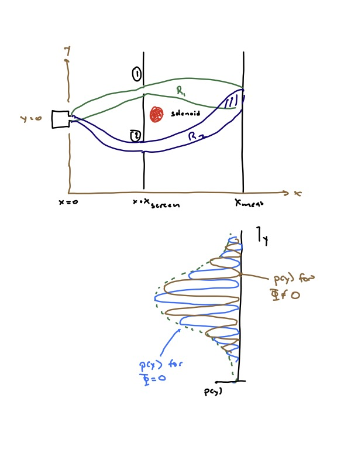

The Aharonov-Bohm effect#
The first system we will explore is a particle moving in a region containing a magnetic field. This allows us to explore the structure of quantum mechanics in a background electromagnetic field, and leads to a surprising consequence – even when the field vanishes where the particle can move, it has a measurable effect on the particle’s wavefunction.
Charged particle in an electromagnetic field#
So far we have considered the case of a constant magnetic field. Here we will consider the more general case of an electromagnetic field.
Gauge potentials#
Two of Maxwell’s equations,
imply that in a simply connected region, \({\vec E}\), {\vec B}$ can be written in the form
The fact that a single solution \({\vec A}, \Phi\) can generally only be found in a simply connected region will become important to us below.
Classical mechanics#
The Lagrangian for a charged particle in this background is
where \(q\) is the charge of the particle. Applying the Euler-Lagrange equation to this, combined with (278), leads to the Lorentz force law
As it happens we cannot simply write \(L\) in terms of the physical field variables \({\vec E}, {\vec B}\). To get a sensible variational principle the Lagrangian needs to be written a s afunction of the vector and scalar potentials \(\Phi, {\vec A}\).
It is important to note that \(\Phi, {\vec A}\) are ambiguously defined via (278). If we shift
then the electric and magnetic fields do not change. This shift in fact makes no real physical change: it is called a gauge transformation or gauge symmetry. You can show that the action \(S = \int dt L\) changes only by boundary terms (that is, by the integral of a divergence), so that the gauge symetry is a symmetry of the dynamics.
The Hamiltonian becomes
where the canonical momentum is
Since \({\dot x}^i\) does not transform under gauge transformations, this means that \(p_i\) does:
Thus the first term in (282) is gauge invariant. The last term shifs by
This shift affects Hamiltons equations:
consistent with the gauge transformation of \(p\).
Quantum case#
In the quantum case, if we let \(\psi(x,t) = e^{- i \frac{e}{\hbar c} \Lambda} \psi'\), then
Similarly,
Thus, if we apply (281) to \(A,\Phi\) in the quantum Hamiltonian, and also shift \(\psi \to e^{-i e\Lambda/(\hbar c)}\psi\), the Schroedinger equation remains unchanged.
The Aharonov-Bohm effect#
Now we consider the setup show below, which is a modification of the classic double slit experiment (we will review this below since we haven’t covered it yet). A source of some particle at \(x = x_{source}\), which we take to produce particles in the same state each time, is behind a screen at \(x = 0\) with two slits. The effect of the screen is to split the state into two wavepackets, \(\psi_1({\vec x}, t)\) and \(\psi_2({\vec x}, t)\). We also assume that if we block slit 1(2) the system is in state \(A_1 \psi_1\)(\(A_2 \psi_2\)), where \(A_i\) enforces \(\int d^2 x |A_i|^2 |\psi_i|^2 = 1\). With both slits open the particle is in state \(\psi({\vec x},t) = \psi_1 + \psi_2\) such that \(\int d^2 x |\psi_1 + \psi_2|^2 = 1\). Note that we are ignoring the \(z\) direction here, we can assume that the particles move more or less at \(z = 0\), or that the wavefunction is more or less constant in the \(z\) direction.

Now let us place a detector with resolution \(\delta\) that detects the \(y\) position of the particle, at \(x = x_{meas}\). If we block slit 2, the probability for the particle to hit the screen at \(y\) with resiolution \(\delta\) is \(p_1(y,\delta) = \delta |\phi_1(x_{meas},y)|^2\), as illustrated in the image above.
The probability that the particle is detected at \(y\) within resolution \(\delta\) is
The typical story is that \(\psi_i(x_{screen},y,t) = \sim f_i(y,t) e^{i k y}\) where \(f\) is some envelope function. If we block either screen, we see that envelope function, but if we do not, then we see interference patterns. The point is that the probabilities do not add, the wavefunctions do.
Now let is place a solenoid just behind the screen. We assume we can arrange it so that \(\psi_i\) has negligible support near the solenoid. The solenoid produces a magnetic field \({\vec B} = B{\hat z}\) in the \(z\) direction inside, with total magnetic flux \(\int_{interior} d^2 x B = \Phi\).
Outside the solenoid, \({\vec B} = 0\). We thus might be tempted to assume that we can set \({\vec A} = 0\). However, we can only do this everywhere in a simply connected region and the region outside of the solenoid fails to be simply connected. This is why I was careful to state that we can solve \({\vec B} = {\vec\nabla} \times{\vec A}\) for \({\vec A}\) in a simply connected region. Consider two overlapping regions \(R_1, R_2\) as shown, and take a path \(C = C_1 + C_2\) around the solenoid that passes through both of them at \(z = 0\), such that \(C_i\) lies in region \(R_i\). By Stoke’s theorem,
Now in region \(R_1\) or \(R_2\) we could set \({\vec A} = 0\) but by the above, we cannot do so in both. If \({\vec A}_i\) is the vector potential in region \(R_i\), then in the overlap regions, we must have \({\vec A}_1 = {\vec A}_2 + {\vec\nabla} \Lambda\); they are related by a gauge transformation.

Now, what do our wavefunctions look like? Outside of the solenoid, they satisfy the time-dependent Schroedinger equation
where I have started using the notation \(\del_t = \frac{\del}{\del t}\). Now in a region \(R_i\), we can write
where the line integral stays in region \(R_i\). Using this,
so that
and \(\phi_i\) are the wavefunctions for the double slit experiment absent the screen.
We assume that the wavefunction \(\phi_i\) has support only in \(R_i\), so that we can unambigoulsy write \(\psi_i\) via the above shift. Now let us measure the position of the particle at \(x_{meas}\). The result is
In other words, as we change \(\Phi\), the interference fringes will undergo a phase shift proportional to the magnetic flux through the solenoid.